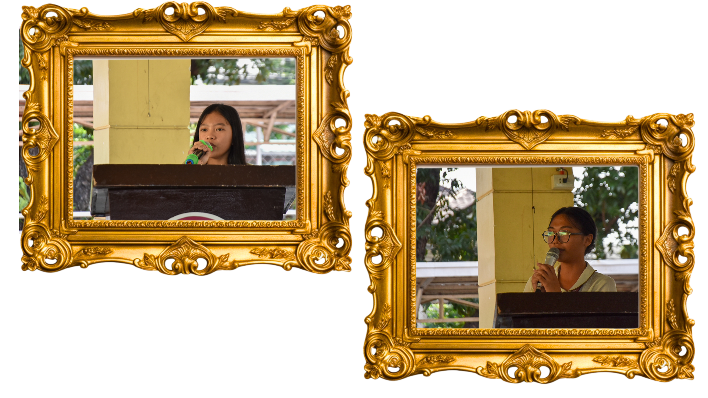
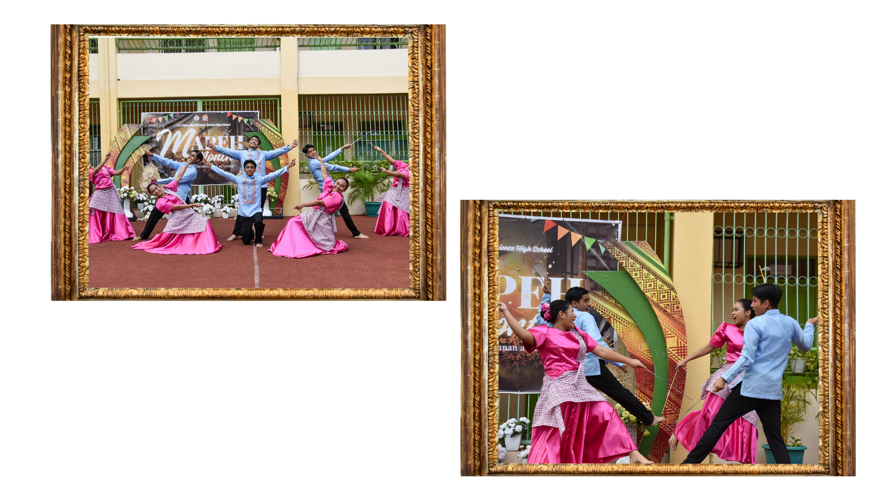
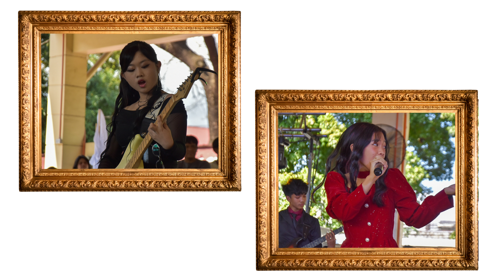

Listen to music while reading ^^

Miting De Avance
Miting De Avance was a memorable event, with our new school leaders ready to serve for the upcoming school year. I remember cheering for my personal favorite candidates, specifically Keisha and Grace, I felt the genuine passion in their voices, their willingness to lead, and to make a difference. Even though I was not part of the candidates for SSLG, I did my part by voting truthfully and honestly for our future leaders, with no bias to my friends or classmates.

Folk Dance
I remember the day of folk dance presentation was so sunny, I was sweating, yet I still stayed until the end to watch and support them. My throat hurt from screaming for Renz, Jayzel, Jadee, and Sofi, I'm so glad for them as we could tell by their choreography and bright smiles they worked hard to carry out the true meaning of Filipino culture. Even though I did not participate for folk dance, I tried my best to support them until the very end. Shoutout too to Micah and Benj for the wonderful intermission, even with the tech delay. Overall, I learned more about the diversity of Filipino dances and music, how special and unique our culture is and how we should protect such culture with events like these to pass it down.

Battle of the Bands
Every year, I go to watch Battle of the Bands to support each group, but most especially Padayon and Umasaginip. Throughtout the years, I saw their growth in not only singing, playing instruments, and performing, I saw them grow in confidence, self-esteem, and discipline. I'm so glad for Keisha and Padayon, with their well-deserved championship spot. In class, I could hear how Keisha always loses her voice due to singing, so I'm proud of her as it was worth it atleast in the end. I'm also proud of Umasaginip, especially to Micah and Eliz, as they've been performing since Grade 7. I could see the talent and potential in them, and I'm congratulating them for the 4th spot. Overall, even when I lost my voice due to cheering, I learned from Battle of the Bands that even if I'm not in a band, I can do my part to support, as it means a lot to the groups. Battle of the Bands was not only a competition of talents, but a showcase of courageousness and creativity to sing each song with their whole hearts and show the diversity of OPM.